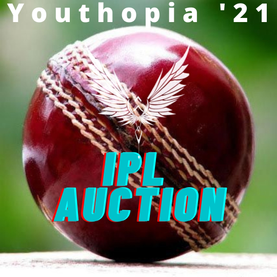
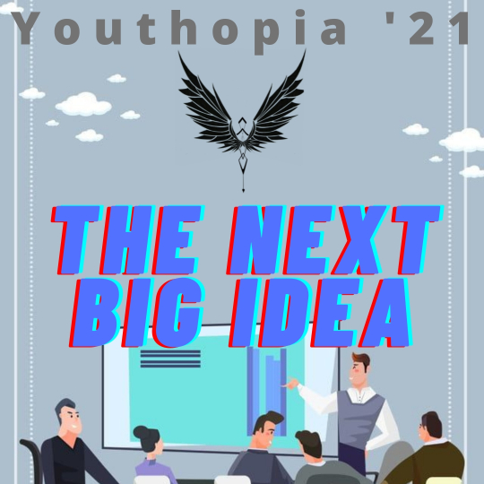
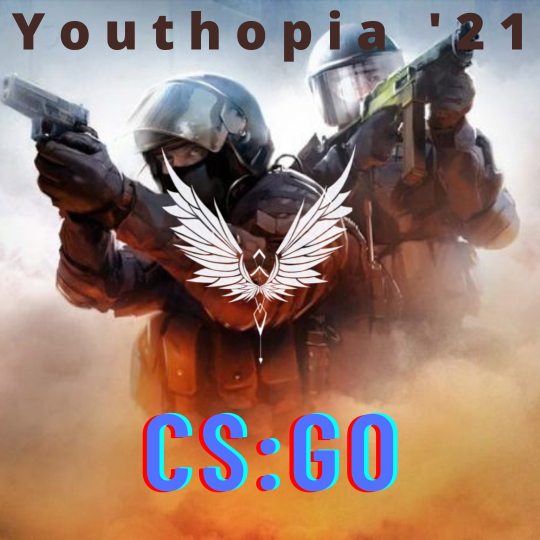

PRESENTED BY

UPCOMING EVENTS



The Heritage School was founded by the Kalyan Bharti Trust in
2001, with the unique aim of holistically nurturing every student.
Today, it has created global individuals, well-rounded in
academics, sports, and extracurriculars.
Our school has a living, breathing atmosphere of conceptual
learning and teamwork. It truly believes in its motto “Atma
Deepo Bhava" (“Be your own light"). Every part of the school
embodies its students' versatile minds - from the student-made
artwork on pillars, the active sports fields, the framed paintings
on walls, and the music and dance rituals which often
reverberate through the campus.
Our school values integrity and compassion as much as it values
knowledge and intelligence. It upholds the concept of collective
education of the mind, body and soul. Recognized as the Best
Co-Educational School in West Bengal by Education World for
six years in a row, The Heritage School has successfully built
youngsters with the zeal to seek answers and the drive to
change the world
The phoenix rises from its ashes again as The Heritage
School announces the twelfth edition of Youthopia. A
confluence of the words Youth and Utopia, it celebrates the
potential of the new generation. The fest is known for
scintillating performances which synchronize with the beats
of our hearts and leave a soul-touching impact. Youthopia
prides itself on being the most inclusive fest in the city.
There are on-stage, offstage, on-field and off-field events. It
is an amalgamation of vision, determination & excellence
pumped up with youthful exuberance.
It facilitates fresh opinions, new events, sky-high adrenaline,
and a lot of fun. It also reminds us of our capabilities and
responsibilities as the next global citizens. Most of all, it is an
unforgettable experience. As you lose yourself in the raw
talent and collaboration, you will feel like you are rising with
the Phoenix, too.